1. 01-calm-today
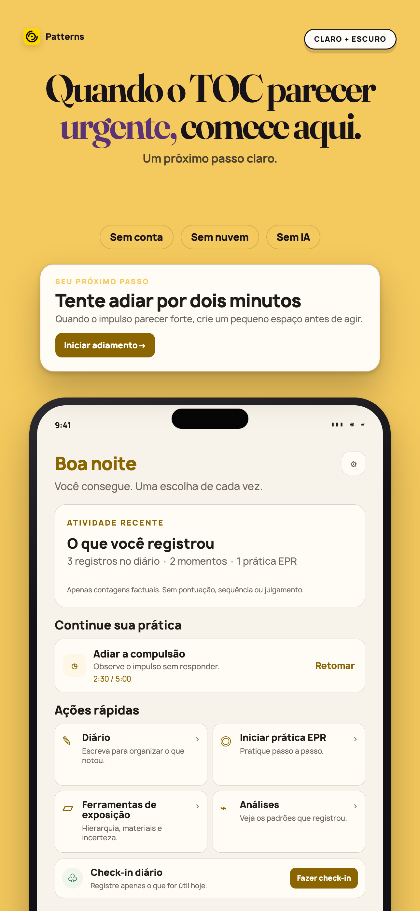
Apple 1290×2796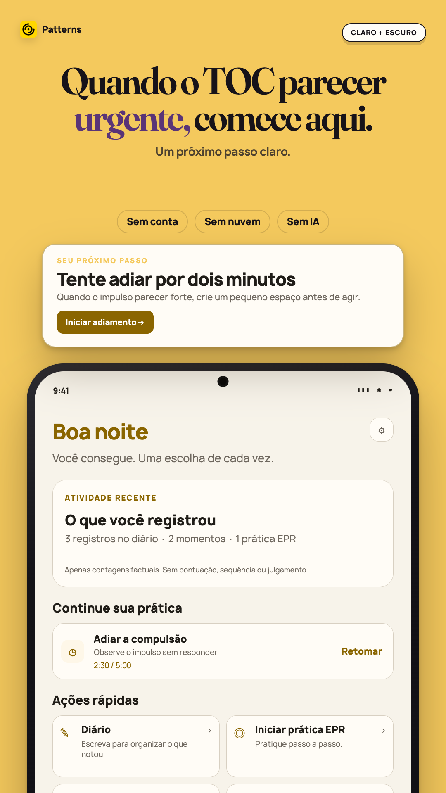
Play 1080×1920Tela Hoje do Patterns com contagens factuais e uma ação para adiar uma compulsão por dois minutos.
2. 02-delay-the-urge
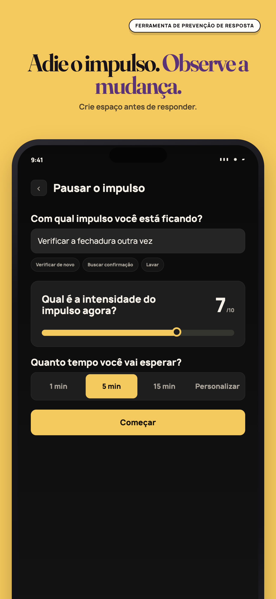
Apple 1290×2796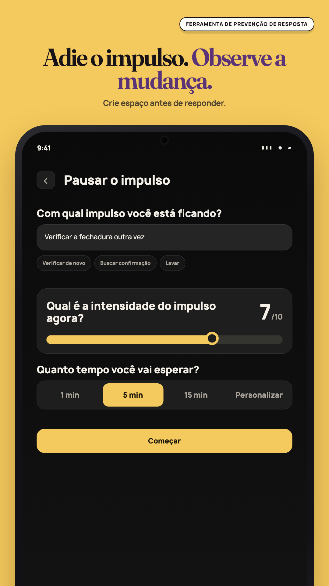
Play 1080×1920Configuração para adiar a compulsão com descrição, intensidade registrada e tempo de espera.
3. 03-build-your-exposure-ladder
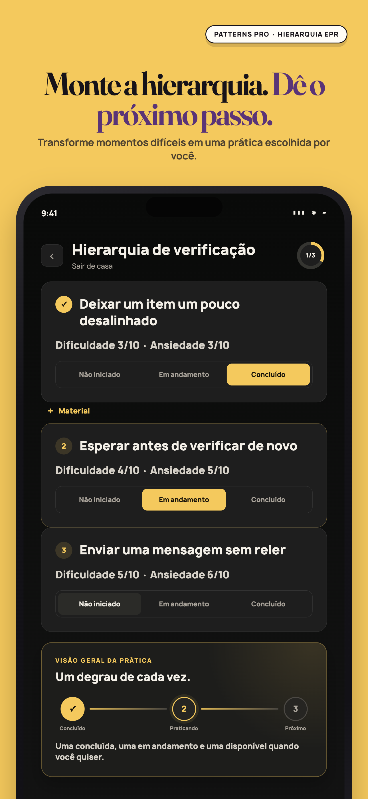
Apple 1290×2796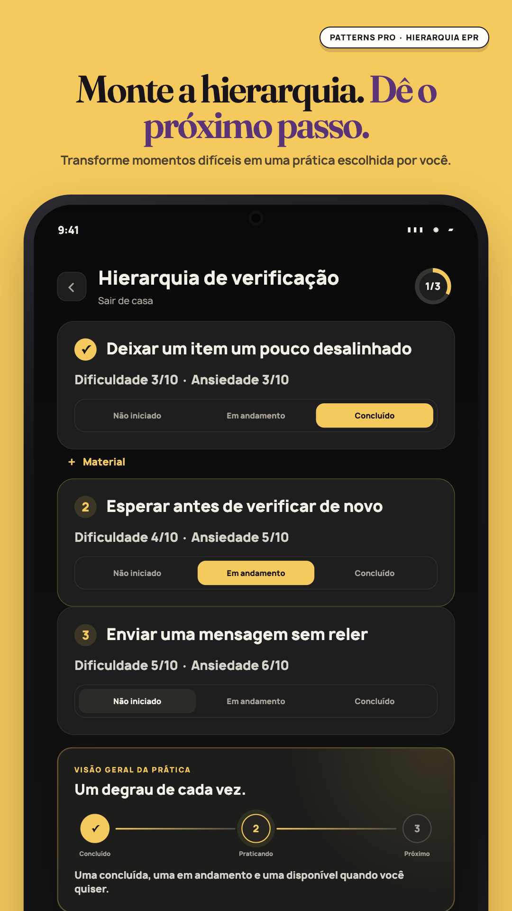
Play 1080×1920Hierarquia de exposição com três etapas e rótulos de texto para cada estado da prática.
4. 04-see-patterns-not-judgments
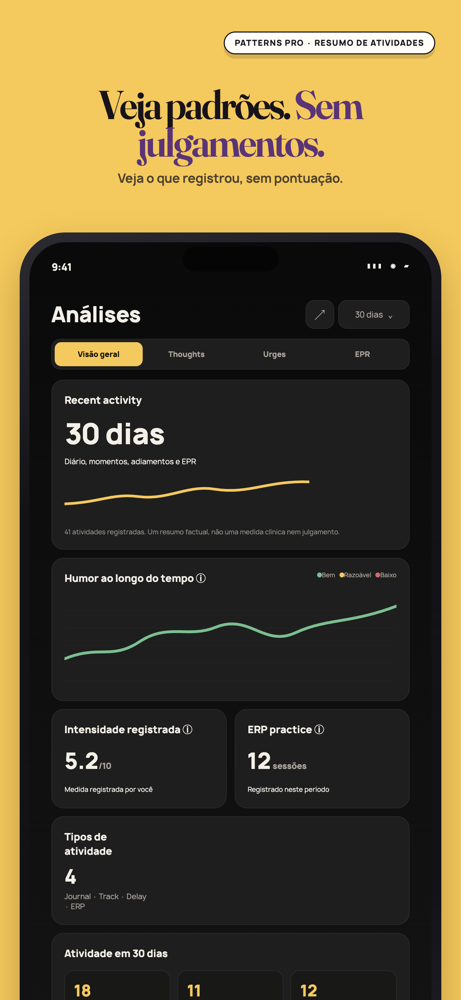
Apple 1290×2796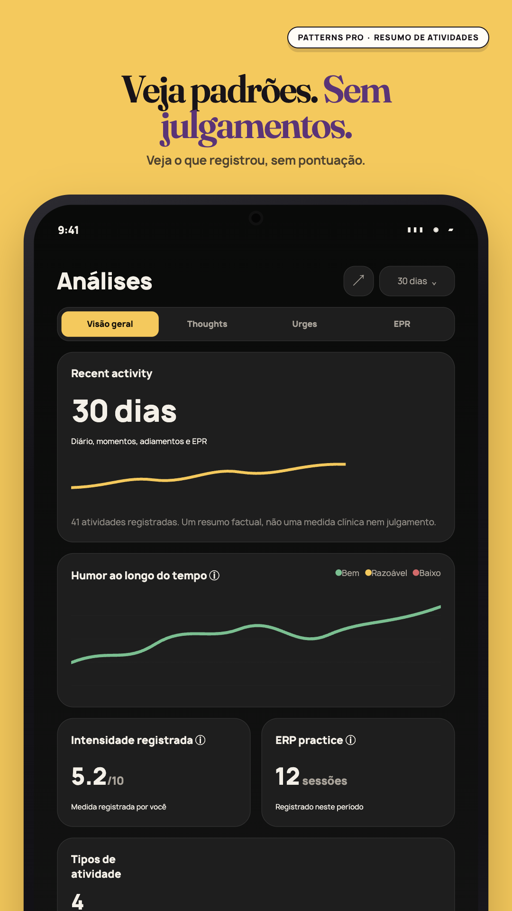
Play 1080×1920Insights tranquilos com contagens factuais de diário, adiamentos e práticas EPR, sem pontuação ou sequência.
5. 05-no-ai-to-ask
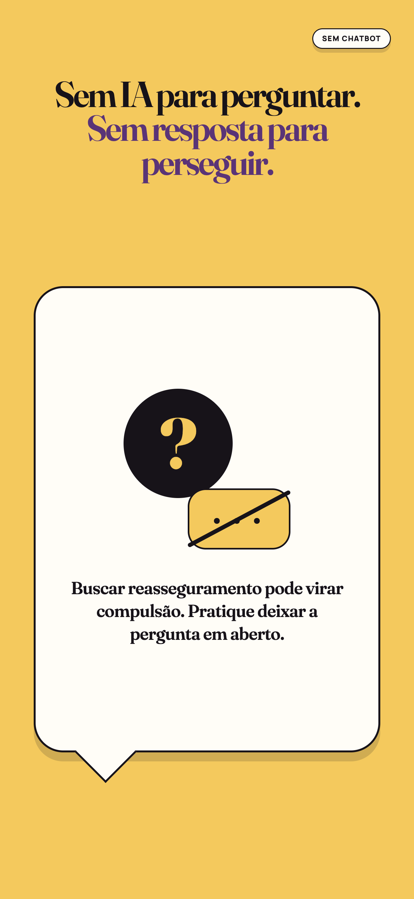
Apple 1290×2796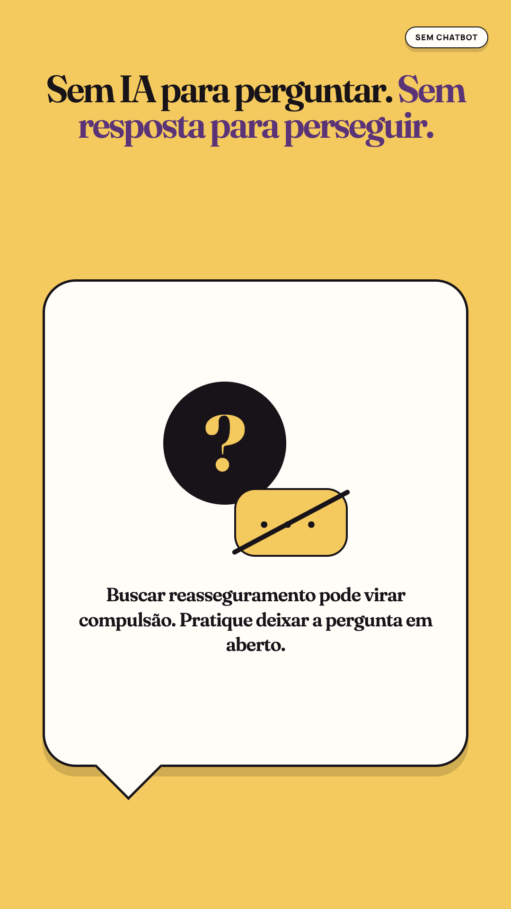
Play 1080×1920Mensagem que explica que o Patterns não oferece um chatbot para reasseguramento imediato.
6. 06-nothing-leaves-your-phone
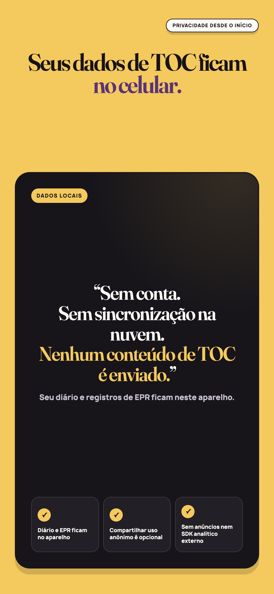
Apple 1290×2796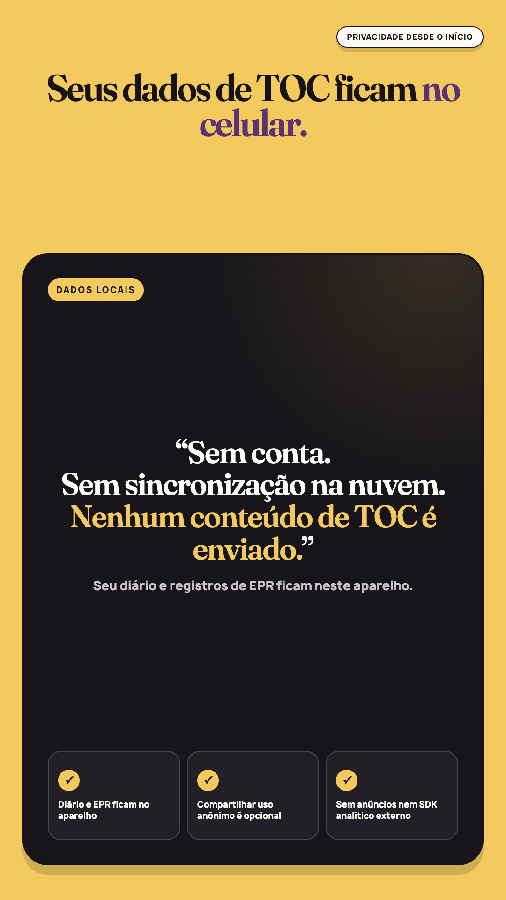
Play 1080×1920Cartão de privacidade informando que diário e práticas EPR ficam no aparelho salvo exportação manual.
7. 07-private-journaling
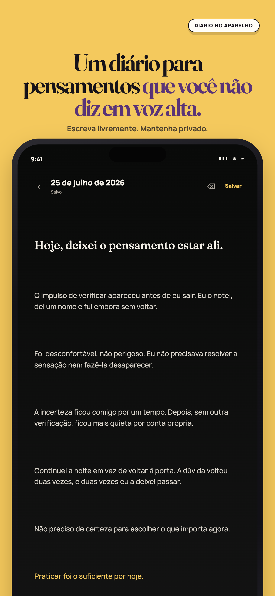
Apple 1290×2796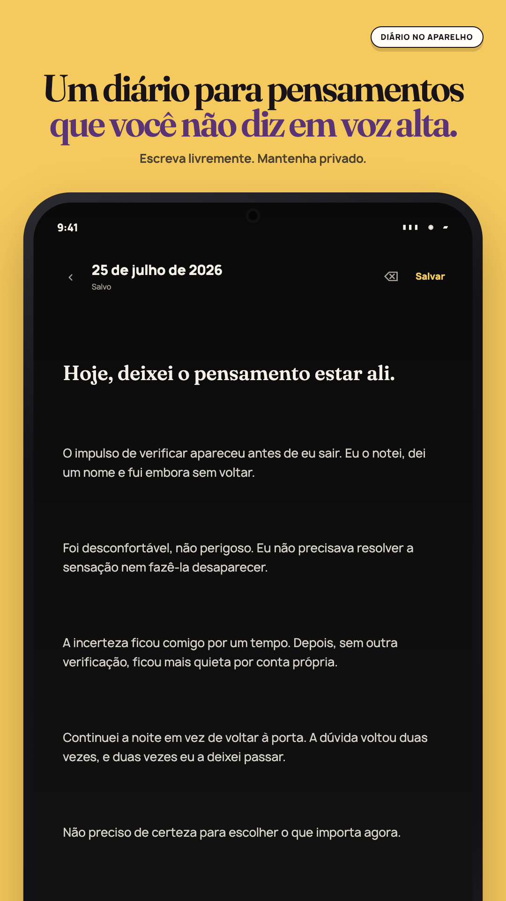
Play 1080×1920Editor de diário privado no aparelho com estado salvo e controles de formatação.
8. 08-patterns-pro
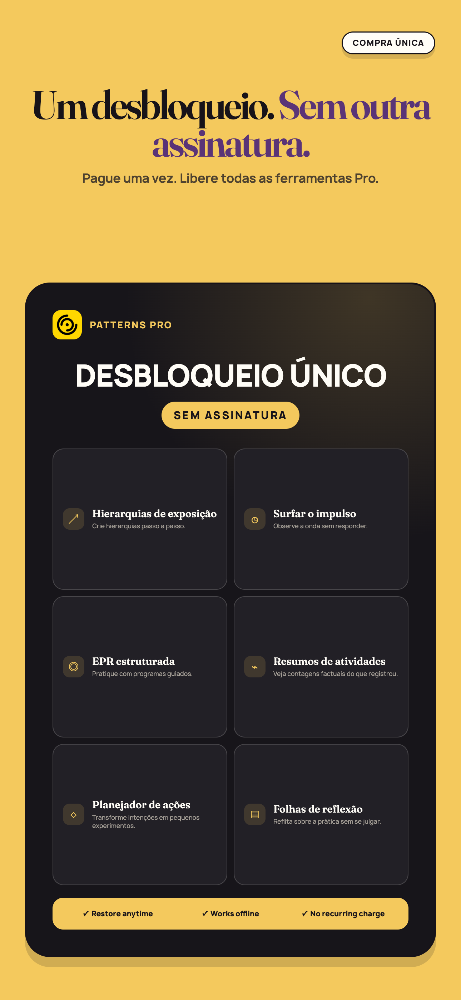
Apple 1290×2796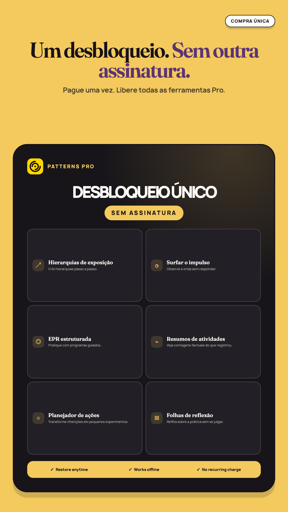
Play 1080×1920Compra única do Patterns Pro com a lista de ferramentas de autoajuda e reflexão incluídas.
Google Play feature graphic
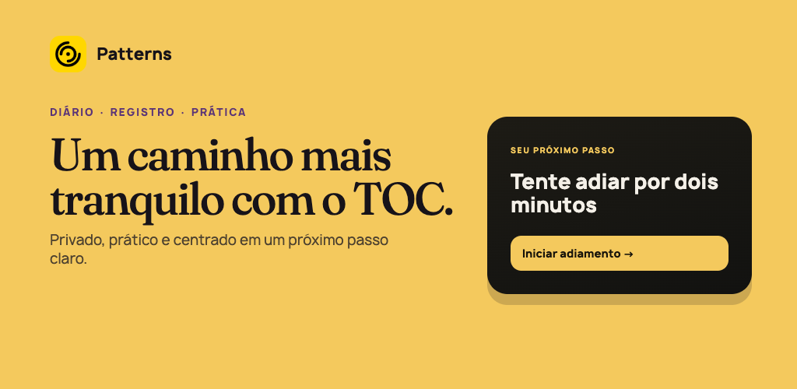
Play 1024×500Um caminho mais tranquilo com o TOC. Privado, prático e centrado em um próximo passo claro.